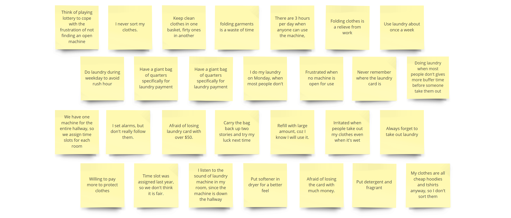
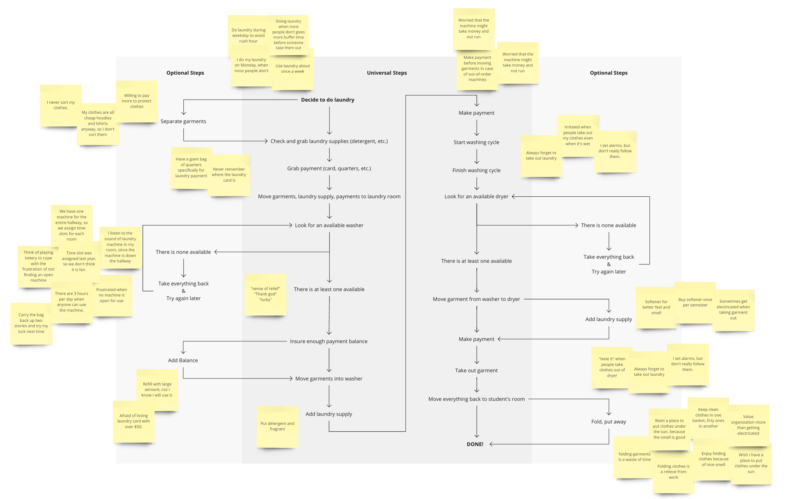
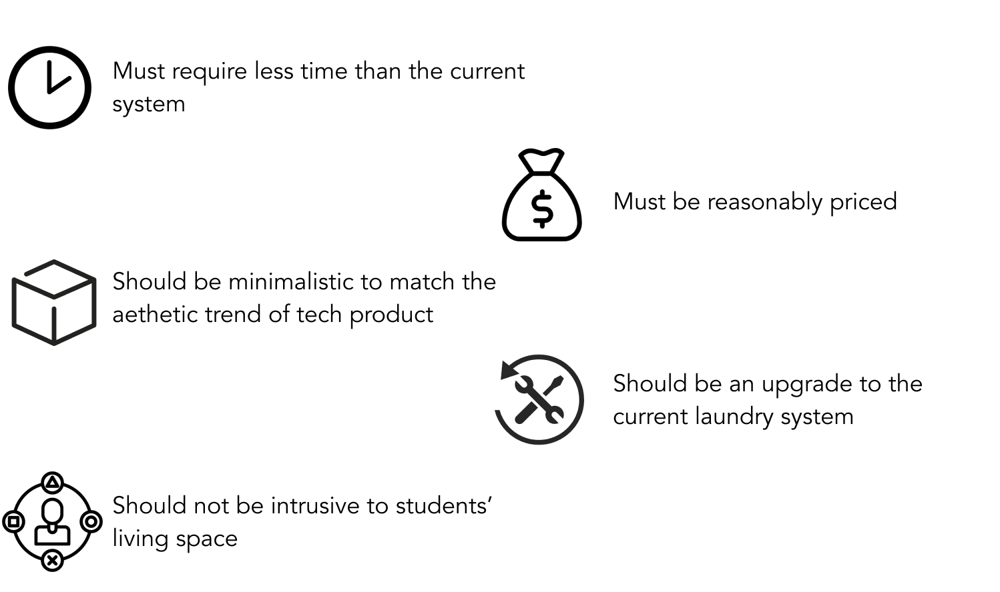
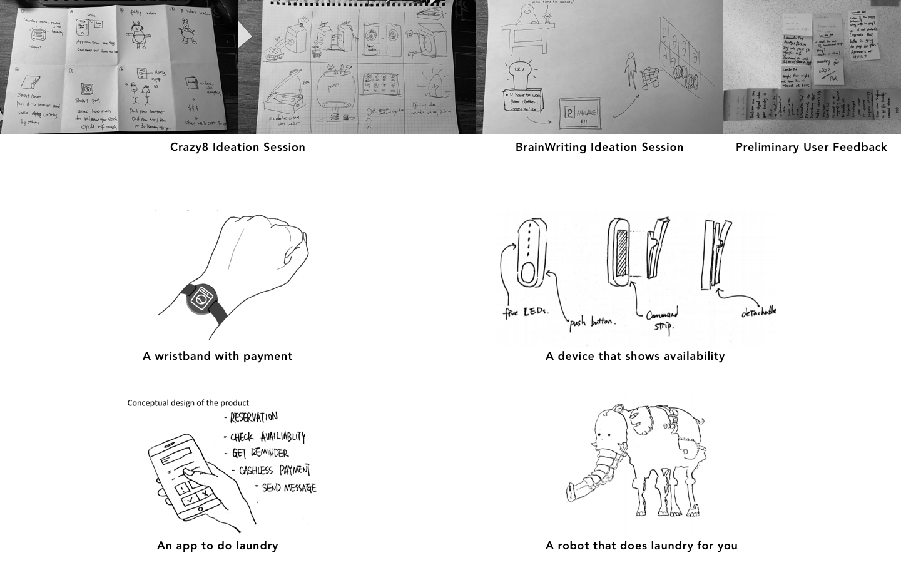
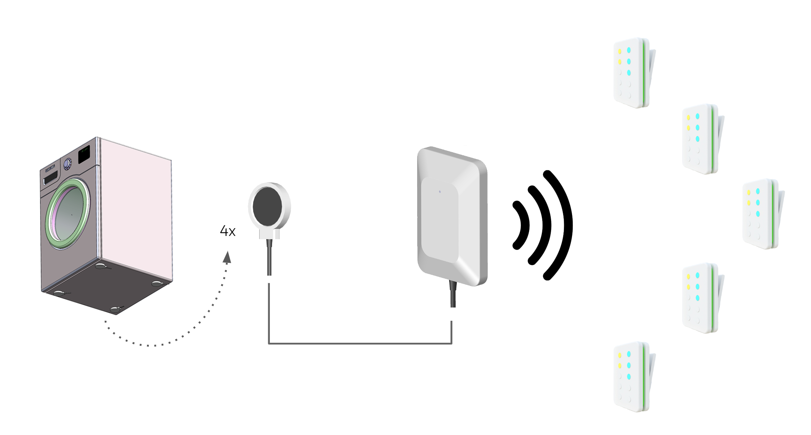
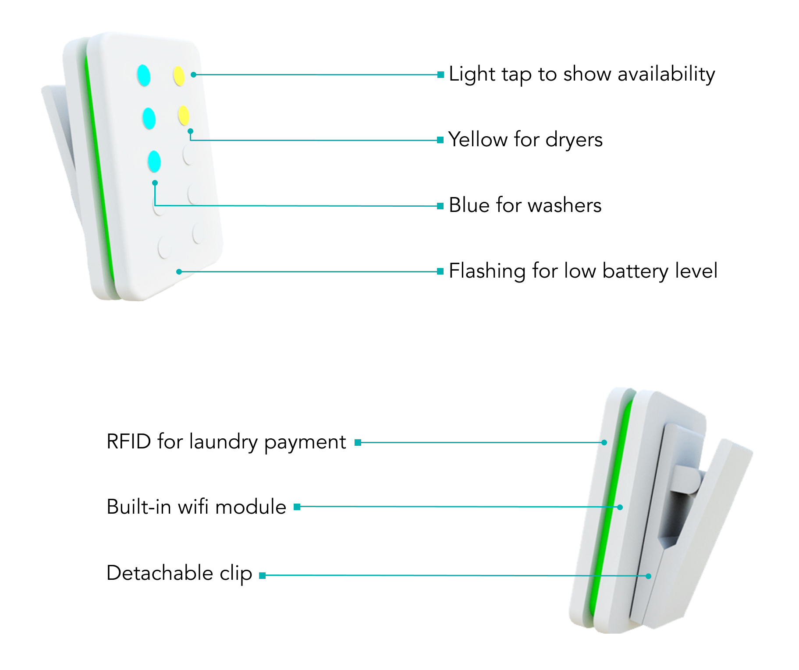
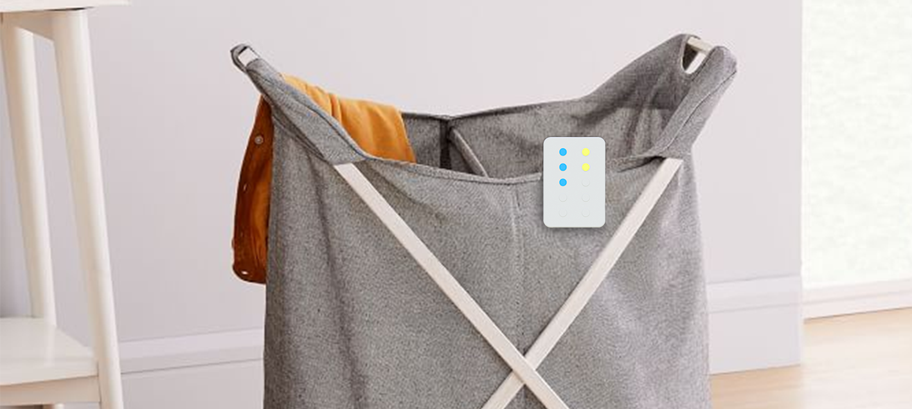

How might we make checking laundry availability easier?
Overview
Problem Statement
''How might we help college students do laundry, especially when they use the shared laundry room, in a more efficient and satisfying way?''
The Result
LaundroPod is a system that shows students laundry machine availability with lights in a business-card-sized device. We envisioned it to have the ability to retrofit to any laundry machines, allowing laundry providers to upgrade outdated ones without investing too much.
What I did
- Individually conducted contextual observation and interviewed 5 students
- Individually synthesized research data and discovered checking availability and refilling balance as two major painpoints
- Collaborated to conduct market research discovered mismatch between obsolete university laundry systems and their ''cutting-edge'' brand image
- Collaborated to design the form of the proposed concept
Undertanding Target Users
The problem statement contains three concepts: ''Shared laundry'', ''college students'', and ''efficient and satisfying''. We need to understand how students interact with their laundry facilities, and what ''efficient and satisfying'' mean to them. To do that, I went to dormatory laundry room to observe what they do and talked to some of them on-site:

We combined the information from observation and interview to a job-to-be-done map:

Key Insights
- Students worry about not having an open laundry machine because they do not want to waste time and effort carrying laundry bags back and forth.
- Students avoid trouble by refilling large amount of money at a time to their payment methods.
- Students who do not like folding clothes but still do it value an organied personal space, but don't like the repetitiveness.
- Students who do not like folding clothes but still do it tend to procratinate to avoid the work.
- Clothes sorting depends on how valuable the clothe is to students.
Having the insights empowered us to be more empathetic towards how they interact with the laundry facilities. Keeping these in mind, we proceed to identify product opportunity gap and derive product requirements.
Analyzing Market Trends
we opened up our scope to each of these concepts to look for significant trends that can potentially impact the problem space.
Three of the trends contributed most to the identification of potential product opportunity and narrowed the problem down:
The trends contribute to narrowing down the problem space to University laundry room. Now we know there is a market, how do we make sure the product is useful, usable, and desirable?
Specifying Product Opportunity Gap and Product Requirement
Taking market trends and research insights as fundations, the team went through a process of proposing 14 potential product opportunity gaps and downselecting with clustering and combining. By the end of the process, we end up with one Super Product Opportunity Gap:

How might we create a product or service that makes laundry preparation stage, which includes checking machine availability and paying, less time-consuming for students?
From the product opportunity gap, we envisioned that the potential solutions to:

Following these product requirements, concepts were proposed to improve experience in one or more steps during laundry preparation.
Ideation and Conceptualization
We conducted ideation methods including ''Crazy8'', ''Brainwriting'', ''Bad Ideas'', and narrowed down concepts from over twenty to four major ones.

After evaluating each major concept based on time constraint, technical feasibility, price, preliminary user feedback and a closer analysis of product requirements and opportunity gap, we selected LaundroPod as the leading concept.
LaundroPod is a system that shows users of laundry machine availability with lights in a business-card-sized device. We envisioned it to have the ability to retrofit to any laundry machines, allowing laundry providers to upgrade outdated ones without investing into new ones.

For the laundry room end, there will be weight, vibration, and electric current sensors to detect whether the machine is available or not. The data will be collected and transmitted to each individual device with wifi network.

The user-end device shows availability with lights when being pressed. The device comes with a sticker and a detachable clip, enabling it to stick to any surfaces or clip onto soft laundry baskets. The ten LEDs are divided into two groups: The blue ones indicates how many washer are available and the yellow ones for dryers. Five LEDs lit indicates five or more machines are available. The green LED ring on the back signals the device in active, incase none of LED is lit.

we kept the interaction simple and minimized the effort required on the user's part to find out the availability of the machines. With the device active only when users press the button, it avoids being intrusive and annoying.
Conclusion and Reflection
The class project ends with conceptualization phase. However, if the project were to go on, here will be the next steps:
- Battery size need to be speculated based on designed lifespan
- Wifi connection procedure need to be tested
At the same time, we recognized some aspect of the design that needs further development or prototyping:
- The information provided by LaundroPod creates a better experience for residence buildings that have one big laundry room, but the experience is not as good for the buildings where each floor has a small laundry room.
- The current way of detecting makes it hard to implement to machines stacked together. New ways of data collection need to be developed.
Reflection
In this project, my team and I learned how to implement Integrated Product Development methods to come up with a usable, useful, and desireable product. By doing this project, I grew trust in the process by realizing the final product is way different than the solution I thought of when looking at the problem statement.
I used the project as an opportunity to practise my user research skills by trying out different approaches: taking notes versus not taking notes, having a long versus a short list of questions, casual conversation versus structured conversations, etc. As I noticed the pros and cons of each approach, I am building myself as a design researcher who:
- Do not take notes but record
- Have a list of questions but do not follow